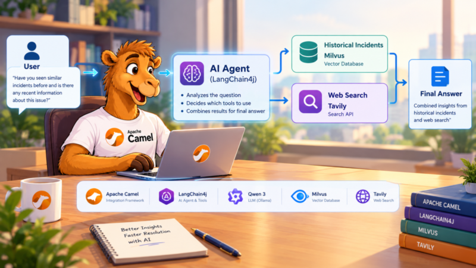
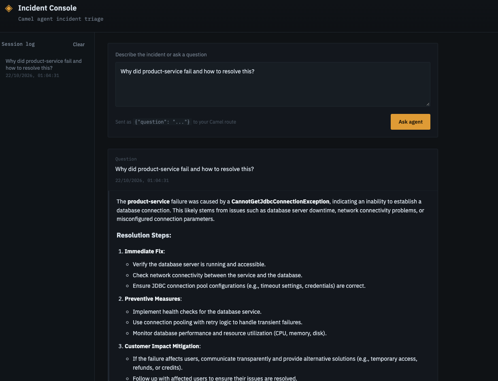

Introduction
Large language models (LLMs) can reason about a question, but they do not know your organization’s past production incidents, and they cannot look up what changed in the world last week. Retrieval-Augmented Generation (RAG) addresses the first problem: relevant data is retrieved and handed to the model as context. Agentic RAG goes one step further. Instead of following a fixed retrieval pipeline, the model itself decides which tools to call to gather the information it needs.
In this post I build a small incident-investigation assistant with Apache Camel. A local LLM (Qwen qwen3:8b running in Ollama) has two tools: one searches historical incidents stored in the Milvus vector database, and the other searches the public web through Tavily. For a question about a past failure, the agent can look at what happened before, check for current information when that helps, and combine both into one answer.
What makes this interesting for Camel users is how little glue code it takes. Each capability is an ordinary Camel route, and Camel’s ai-tool and langchain4j-agent components connect those routes to the agent. The rest of this post follows those routes.
What we are going to build
The application uses four Camel components:
langchain4j-embeddingsturns incident text and questions into vectors.milvusstores and searches those vectors.ai-toolexposes a Camel route as a tool that an agent can call.langchain4j-agentruns the agent and gives it access to the tools.
A question flows through the application like this:
You: "Why did the product-service fail, and is there a recent fix?"
|
v
LangChain4j Agent (qwen3:8b via Ollama)
langchain4j-agent:incident-agent
|
chooses one or both tools by their description
| |
v v
ai-tool:search_historical_incidents ai-tool:tavily_search
(tag: incident) (tag: web)
| |
v v
langchain4j-embeddings:query-embedding Tavily web search API
|
v
milvus:historical_incidentsThe model does not connect to Milvus or to the web by itself. It only sees two named tools, and each tool is backed by a Camel route that decides how the work is actually done. This separation is important: the agent can only perform the operations that a route explicitly exposes.
| Tool | What it does | Input |
|---|---|---|
search_historical_incidents | Semantic search over past incidents stored in Milvus | question |
tavily_search | Searches the current public web for up-to-date information | query |
The example uses the ai-tool component, which was introduced in Apache Camel 4.22, so you need Camel 4.22 or newer. The complete code is in the camel-agentic-rag repository on GitHub.
The data side in brief
Before the agent can search anything, the incidents have to be in Milvus. This part is plain Camel and Spring Boot, so I keep it short. The repository README has the exact commands for each step.
- Models. Ollama exposes an OpenAI-compatible API, so a Spring
@Configurationclass creates a LangChain4j chat model (qwen3:8b) and an embedding model (nomic-embed-text, which produces 768-dimensional vectors) that both point at the local Ollama server. Camel routes only declare where these models are used, so switching to another provider is mostly a change in this one class. - Collection. A small set of admin routes creates the
historical_incidentscollection, builds a cosine-similarity index on theembeddingfield and loads the collection into memory. A single call,POST /api/milvus/initialize, runs all three. Besides the vector, each incident stores its date, service name, operation, status, exception and log snippet. - Ingestion. A file route reads a daily status report in CSV format, keeps only the
FAILEDrows, creates an embedding for each one and inserts it into Milvus.
The ingestion route shows how the Camel components compose. Creating the embedding is a single to(...) step, and the insert is a Milvus action header followed by another to(...):
from("{{daily.report.filepath}}?delete=false&fileName=daily_status_report_with_date.csv")
.routeId("daily-status-route")
.unmarshal().bindy(BindyType.Csv, DailyStatusReport.class)
.split(body())
.choice()
.when(simple("${body.status} == 'FAILED'"))
.process(failedIncidentProcessor) // build the incident text
.to("langchain4j-embeddings:query-embedding") // text -> vector
.process(embeddingProcessor) // keep the vector
.to("direct:insert-historical-incident")
.otherwise()
.log("Skipping non-FAILED incident: ${body}")
.end();
from("direct:insert-historical-incident")
.routeId("insert-historical-incident")
.process(milvusInsertProcessor)
.setHeader(Milvus.Headers.ACTION).constant(MilvusAction.INSERT)
.to("milvus:historical_incidents");The route uses the daily.report.filepath property as its complete endpoint URI, so the property must hold a file: URI that points at the input folder, for example file:///data/input. A plain folder path fails at startup, because Camel cannot find a component for it.
The embedding model that produces the vectors is configured once, in the Spring configuration class, not in the route. The route only says where in the flow the text becomes a vector. Questions use the same embedding step later, so incidents and questions end up in the same vector space, which is what makes similarity search meaningful.
Step 1: Expose incident search as a tool
Now for the part that is specific to Camel. The ai-tool consumer turns a route into a tool. Everything the model needs to know about the tool is in the endpoint URI: a name, a description of when to use it, and typed parameters.
from("ai-tool:search_historical_incidents"
+ "?description=Search historical production incidents using semantic similarity. "
+ "Use this tool when you need historical incident information, previous failures, "
+ "exceptions, logs, services, or operations."
+ "&tags=incident"
+ "¶meter.question=string"
+ "¶meter.question.description=The incident or technical question to search for"
+ "¶meter.question.required=true")
.routeId("ai-tool-search-historical-incidents")
.process(exchange -> {
String question = exchange.getMessage().getHeader("question", String.class);
if (question == null || question.isBlank()) {
throw new IllegalArgumentException("question is required");
}
exchange.getMessage().setBody(question);
})
.to("langchain4j-embeddings:query-embedding") // question -> vector
.process(embeddingProcessor)
.to("direct:search-similar-incidents"); // search MilvusThe endpoint is the integration contract between the route and the model, so it is worth reading carefully:
- The tool name,
search_historical_incidents, is what the model sees and uses to invoke the tool. - The description tells the model when to use the tool. It is not just documentation for a human reader. The model relies on it to decide whether this tool is relevant to a question, so it should mention the kinds of questions the tool answers: previous failures, exceptions, logs, services and operations.
- Each
parameter.NAMEoption declares a typed argument, here a required string calledquestion. When the model calls the tool, Camel makes the value available as a message header with the same name, which is why the route reads thequestionheader. tags=incidentgroups the tool. In Step 3 the agent uses this tag to decide which tools it can see.
After the parameter check, the body of the route is the same embedding step used during ingestion, followed by the search. The search is a second route, which builds a Milvus SEARCH request from the vector that the embedding step stored in a header and asks for the three closest incidents:
from("direct:search-similar-incidents")
.routeId("search-similar-incidents")
.setHeader(Milvus.Headers.ACTION).constant(MilvusAction.SEARCH)
.process(exchange -> {
float[] vector = exchange.getMessage()
.getHeader("CamelLangChain4jEmbeddingsVector", float[].class);
// ... convert to List<Float> and build a SearchSimpleParam:
// collection name, query vector, limit of 3, fields to return
exchange.getMessage().setBody(searchParam);
})
.to("milvus:historical_incidents");Whatever this route returns becomes the tool result that the model reads. In this case it is the matching incidents with their service name, operation, status, exception and logs, which is exactly the evidence the model needs to explain what happened before.
Step 2: Add web search as a second tool
Historical data cannot answer every question. An engineer might want to know whether a library issue was fixed in a recent release, or what the current documentation recommends. For that, the application exposes a second tool, tavily_search, which calls the Tavily web search API.
It is declared in exactly the same way as the first tool, which is the point of ai-tool: every capability looks alike to the agent, whatever it does behind the scenes.
from("ai-tool:tavily_search"
+ "?tags=web"
+ "&description=Search the current public web for up-to-date information. "
+ "Use this tool for current events, latest releases, recent documentation, news, "
+ "or information that cannot be found in historical incidents."
+ "¶meter.query=string"
+ "¶meter.query.description=The web search query"
+ "¶meter.query.required=true")
.routeId("ai-tool-tavily-search")
.process(exchange -> {
String query = exchange.getMessage().getHeader("query", String.class);
// ... build the JSON request: query, search_depth=basic, max_results=5
exchange.getMessage().setBody(requestBody);
})
.setHeader(Exchange.HTTP_METHOD, constant("POST"))
.setHeader(Exchange.CONTENT_TYPE, constant("application/json"))
.setHeader("Authorization", constant("Bearer " + tavilyApiKey))
.toD(tavilyApiUrl + "?bridgeEndpoint=true&throwExceptionOnFailure=true")
.process(exchange -> {
// ... turn the JSON response into plain text:
// "1. <title> / URL: ... / Content: ..." for each result
});Notice the differences from the first tool. The parameter is called query instead of question, and each tool describes its own input. The tag is web instead of incident. And the description deliberately draws a boundary between the two tools: web search is for current information, while anything that lives in the historical incidents should be found there. That wording helps the agent choose the right tool.
The route itself is regular Camel: it builds a JSON request, sets the HTTP method and headers, calls the API with toD and then reshapes the response. The last step is a deliberate choice. Instead of passing Tavily’s raw JSON back to the model, the route formats the results as a short numbered text list with a title, URL and content per result. A small local model handles that much better than a large JSON document. The API key and URL are read from configuration (tavily.api.key and tavily.api.url), so the secret stays out of the route code.
Step 3: Connect the tools to the agent
Both tools now exist as routes, but the agent still has to discover them. The langchain4j-agent endpoint does that through its tags option:
from("direct:incident-agent")
.routeId("incident-agent-api")
// ... read "question" from the JSON body and set it as the message body
.setHeader("CamelLangChain4jAgentSystemMessage", constant("""
You are an incident analysis agent.
Use search_historical_incidents for questions about past incidents.
Use tavily_search for current public information such as latest releases.
Use both when the answer needs internal evidence AND current external information.
Never invent facts. Only state facts supported by the tool results.
"""))
.to("langchain4j-agent:incident-agent"
+ "?agentConfiguration=#incidentAgentConfiguration"
+ "&tags=incident,web");tags=incident,web is the link between the routes and the agent. Every ai-tool route with one of these tags becomes available to it, and a tool with a different tag would stay hidden. This is an explicit decision about what the agent may do, and it keeps the agent configuration separate from the tool implementations: you can add a new tool by writing a new route with the right tag, without touching the agent route.
The system message, passed in a header, adds guidance on top of the tool descriptions. It tells the model when to prefer each tool, to use both when the question needs internal evidence and current information, and not to invent facts. The tool descriptions say what each tool can do; the system message says how the agent should behave.
The agent itself is configured by an ordinary Spring bean, which the endpoint references by name with #incidentAgentConfiguration:
@Bean(name = "incidentAgentConfiguration")
public AgentConfiguration incidentAgentConfiguration(ChatModel incidentChatModel) {
return new AgentConfiguration()
.withChatModel(incidentChatModel)
.withMaxToolCallingRoundTrips(2)
.withExecuteToolsConcurrently();
}withChatModel(...)gives the agent the local Qwen model.withMaxToolCallingRoundTrips(2)caps how often the agent can go back and forth between the model and its tools for a single request. It keeps a confused model from looping on tool calls, and it bounds latency.withExecuteToolsConcurrently()lets the agent run both tools at the same time when the model asks for them in the same step, so the Milvus search and the web search do not wait for each other.
Finally, a REST route exposes the agent as POST /incidents/agent. A second endpoint, POST /incidents/search, runs the embedding and Milvus search directly without the agent, which is handy for checking retrieval on its own before you involve the model.
The result
Putting it together, a request goes through these steps: the REST route passes the question to the agent, the agent reads the tool descriptions and decides which tools to call, Camel runs the matching routes, and the tool results go back to the agent, which writes the final answer. If the model asks for both tools in one step, they run in parallel.
Ask the agent a question about a past failure:
curl -X POST "http://localhost:8080/incidents/agent" \
-H "Content-Type: application/json" \
-d '{"question":"Why did the product-service fail and how to resolve this?"}'I also built a small web UI, the Incident Console, on top of this endpoint. In the example below, the answer names the failing service and the exact exception, a CannotGetJdbcConnectionException in product-service, and lists the likely causes and resolution steps.

The Incident Console: a question about a failed service goes to the Camel agent route, and the answer comes back with the cause and resolution steps.
As with any LLM-based assistant, treat the answer as a starting point and verify it against your logs and monitoring. An 8B model running locally is a good fit for a demo or an internal tool, but smaller models can be less reliable at choosing tools, so clear tool descriptions and a focused system message matter even more.
Try it yourself
The complete runnable example is available on GitHub. Its README walks through starting Milvus with Docker Compose, pulling the two Ollama models, loading the sample incident CSV and calling the endpoints. You will need Camel 4.22 or newer, a local Ollama installation and a Tavily API key.
Conclusion
Agentic RAG needs two things: a model that can choose tools, and tools that are easy to describe. Camel supplies the second part. Any route can become a tool by starting from ai-tool: with a name, a description and typed parameters, and a single tags option on the langchain4j-agent endpoint decides which tools an agent may use. The model decides when to call a tool, while Camel decides what the tool does, and keeps embeddings, vector search and web calls in small routes that you can test on their own.
The same pattern is not limited to incident search. Any existing Camel route, for example one that queries an ERP system or opens a support ticket, can be exposed to an agent with a name, a description and a few typed parameters, while the integration logic stays where it already lives.